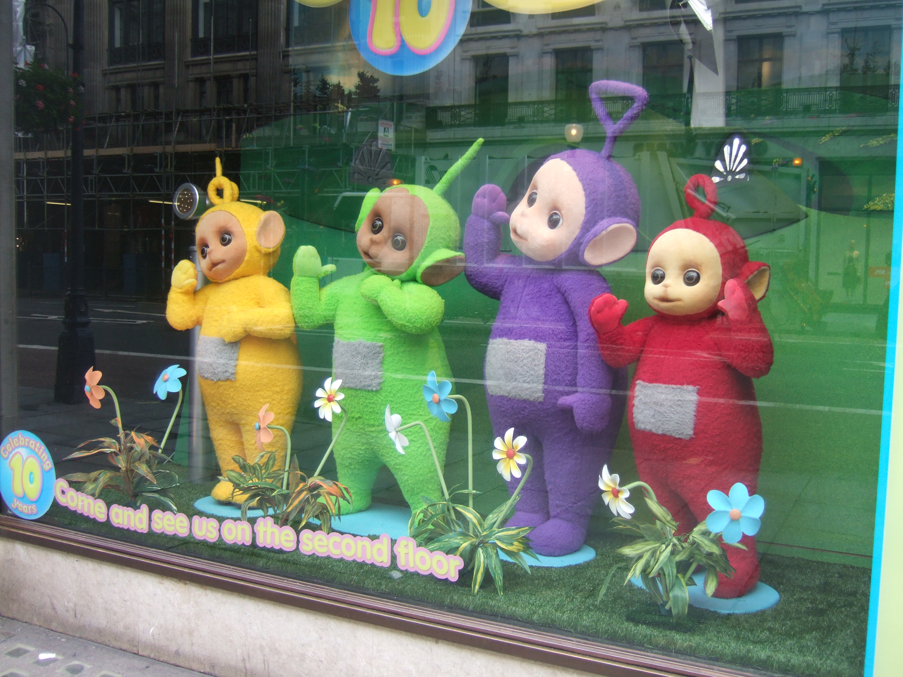

Building Mini-languages in Ruby with Treetop
Roland Swingler

We've got internal DSLs everywhere in Ruby
- Rake, Sinatra, ActiveRecord, RSpec ...
- More! Everywhere!
Why bother with external DSLs then?
But... Parsing is hard! Lets go shopping.
- Compiler / Interpreter literature can be daunting

It doesn't have to be hard: Treetop
- rubyish way of writing minilanguages
- A PEG - Parsing Expression Grammar
- as used by Cucumber:
Builds a tree

Simple example - defining the grammar
grammar Greeting
rule expression
greeting ','? ' '+ greeted '!'?
end
rule greeting
"Hello" / "Hola" / "Word up"
end
rule greeted
[^!]+
end
end
Simple example - using it
output = GreetingParser.new.parse "Word up, world!"
puts "You said '#{output.greeting.text_value}' to: #{output.greeted.text_value}" if output
GreetingParser.new.parse("Farewell, forever")
A more realistic example
- working on making it easy to write XMPP bot that can respond to chat room messages
- Actions defined with a standard internal-DSL approach:
listen /some message regxp/ do |msg|
# do something, maybe send a reply to the room
end
Replace the regular expression with a mini-language
whereis <person> [[on] <day>]
- Some more examples of actions:
monitor build <build_key>
slap <someone> [for <something>]
- more interesting than the greeting example, because we have nested structures
Grammar
grammar Message
rule expression
(words / identifier / optional)+
end
rule words
[^><\[\]]+
end
rule identifier
'<' identifier_value:( [a-zA-Z_] [a-zA-Z_0-9 ]* ) '>'
end
rule optional
"[" expression "]"
end
end
Getting it to do something
- You can treat the generated tree as a data structure (as with Greeting)
- You can make the tree responsible for actions (Interpreter pattern)
- Each node has an interpret method which does the appropriate thing for that node.
- Need to pass a context around to collect values
Adding code to nodes
rule optional
"[" expression "]" {
def interpret(context)
"(?:" + elements.interpret(context) + ")?"
end
}
end
rule optional
"[" expression "]" <OptionalNode>
end
Warning!
- You can't define any type of grammar with Treetop.
- Left recursion is OUT!
rule infinite_loop
infinite_loop / "will never be chosen"
end
- A good book for more theory is Programming Pragmatics
Other Options
- Ragel - from brief overview more complicated than treetop. Used in Mongrel.
- "Real" parser-generators ANTLR, Bison/Flex, lots more but not many specifically targeting ruby output
- Hand-written parsers
Thanks
- twitter: @knaveofdiamonds
- blog: http://knaveofdiamonds.tumblr.com
- code: http://github.com/knaveofdiamonds